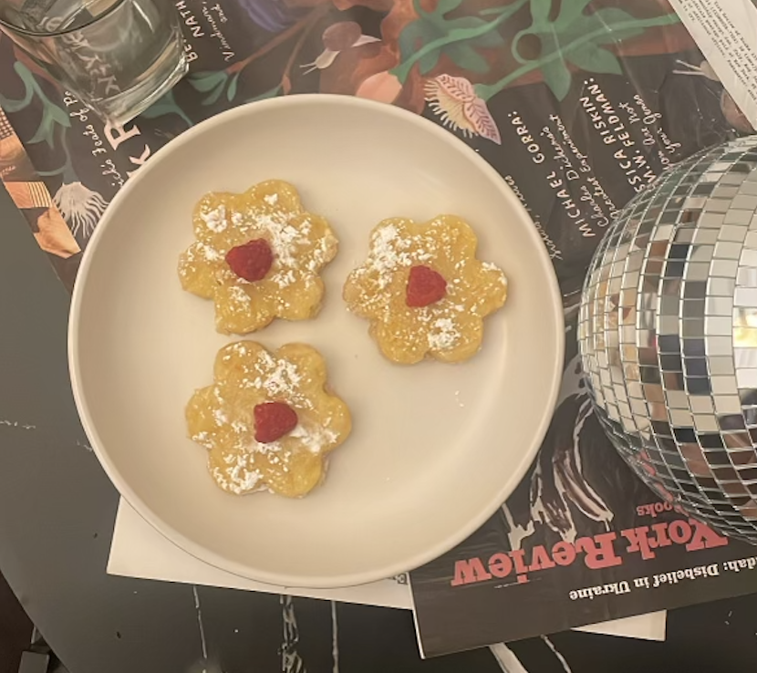
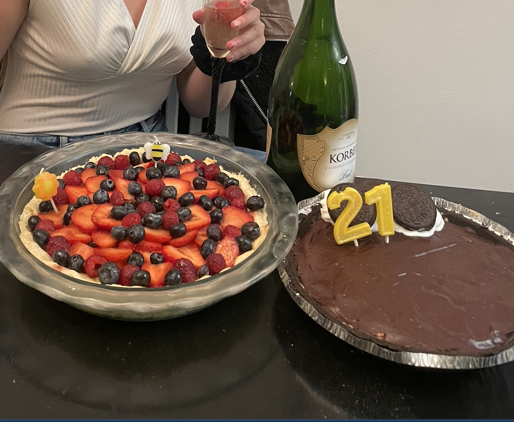
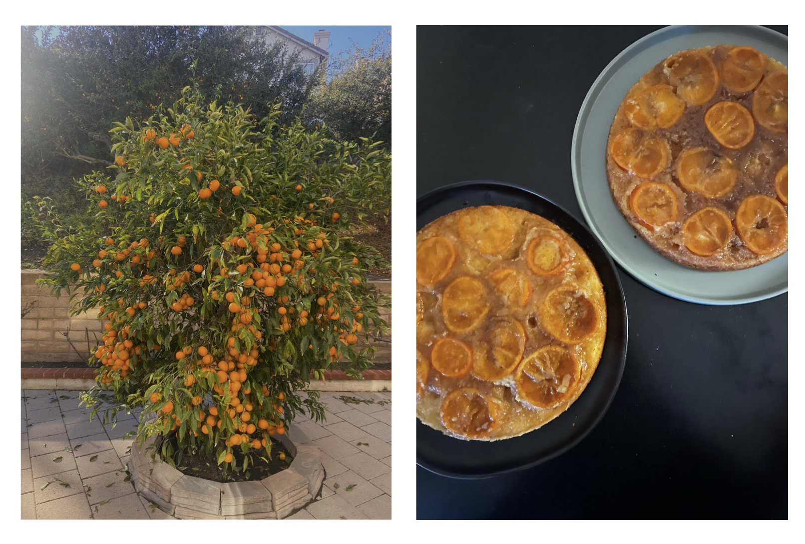

Chocolate Cake with Tahini Cream Cheese Frosting
For my 21st birthday, I knew I wanted to make a cake and I knew I wanted to play with unique flavors. After serious digging I settled on making a tahini (sesame butter) flavored cake. I made a rich chocolate cake base, layered with a tahini caramel and toffee chunks, topped with the tahini cream cheese frosting and candied blood oranges (that took me two whole days to make)! The flavor profile of this cake was truly one of my favorites and definitely one to try out!
Grapefruit Bars
When life gives you lemons, you make lemonade and when life gives you grapefruits, you make.. you guessed it - Grapefruit Bars! I truly think I go through a box of trader joes lemon bars a week so when I had a couple grapefruits left over I decided to see how they would compare. These grapefruit bars taste surprisngly similar to lemon bars, only slightly less sour and a little sweeter.
Fruit Tart and Oreo Peanut Butter Pie
My peanut butter and fruit tart loving roommate's 21st called for not one but two delicous desserts! On the left we have a fruit tart filled with egg custard, topped with berries. And to satisfy her peanut butter addiction, I made her a peanut butter pie with an oreo crust, peanut butter filling and chocolate fudge topping.
When life gives you clementines ... you make clementine cake!
During a relaxing weekend at my aunt's home in San Diego, I spent most of my time circling around their gorgeous clementine tree. The clementines were the juiciest and sweetest citrus ever, so of course I *had* to steal a good handful and bring them home with me. This cake used every inch of the clementine from slices at the bottom, zest infused into the sugar and I sealed the deal by throwing in the clementine juice into the batter. This cake turned out incredible and if you are a citrus lover this is a must try!
